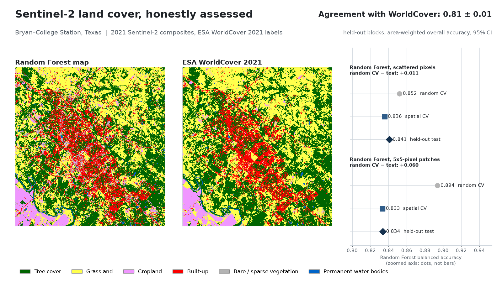

Land cover with honest accuracy
Random-forest land-cover classification of Bryan–College Station from Sentinel-2, showing how random cross-validation overstates accuracy compared with spatial block validation, with area estimates and 95% intervals (Olofsson et al. 2014).
Held-out agreement with ESA WorldCover: 0.81 ± 0.015 (area-weighted, 95% CI). With polygon-like training patches, random cross-validation scored 0.89 balanced accuracy but held-out blocks only 0.83; all six area estimates' 95% intervals contained the reference area.